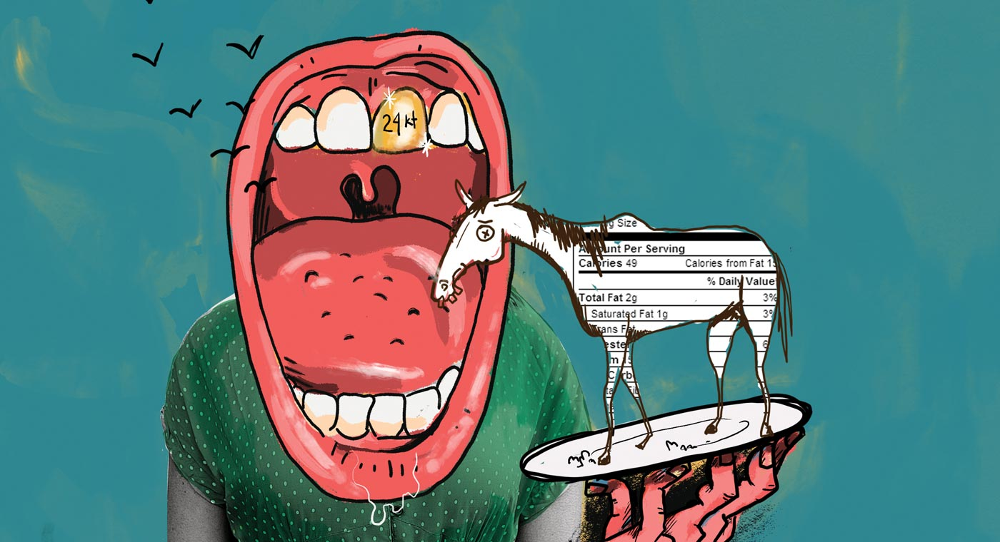

<div class="wrap relative">


  <ul class="list-group list-group-inline grid">
    <li class="unit xs-1 s-1 m-1-2 l-1-2"></li>
    <li class="unit xs-1 s-1 m-1-2 l-1-2"></li>
  </ul>
</div>


</div>
